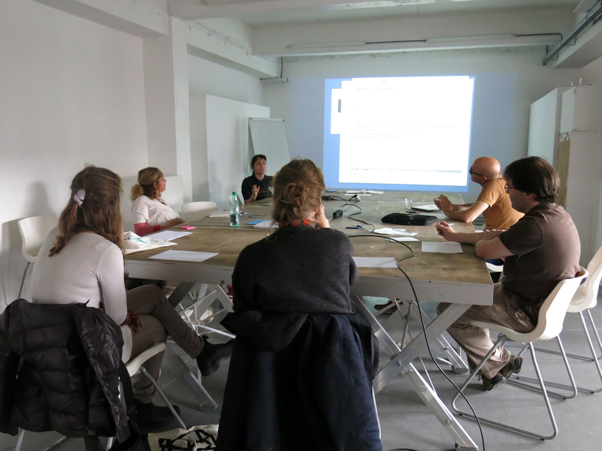

Workshops.
DSI Workshops
Open Making for Social Impact is the third workshop of the training programs series promoted by DSI4EU. The workshop is dedicated to digital social innovation in the context of the maker movement and open hardware and design community. The workshop takes place at UNDERBROEN a laboratory of local and urban production and it will be led by Zoe Romano (WeMake) and Serena Cangiano (Maind SUPSI) with the participation of Simona Maschi (CIID) and Christian Villum (Danish Design Center).

The workshop proposes an interactive session to collaboratively assess how open source, maker and digital projects can grow to have a better social impact. The collaborative session focuses on key questions such as: – can makers’ projects scale considering societal and community goods as parameters? – what is a sustainable way of growing as an innovator? – can the social impact be the driver of bottom-up innovation? What will we make? Participants will be involved in the creation of a DSI Scale, an open source tool that support the maker and open hardware community to grow considering values such as the creation of a community, the technological openness, the communication and the financial sustainability.
How to run a DSI workshop
Open Making for Social Impact is the third workshop of the training programs series promoted by DSI4EU. The workshop is dedicated to digital social innovation in the context of the maker movement and open hardware and design community. The workshop takes place at UNDERBROEN a laboratory of local and urban production and it will be led by Zoe Romano (WeMake) and Serena Cangiano (Maind SUPSI) with the participation of Simona Maschi (CIID) and Christian Villum (Danish Design Center). The workshop proposes an interactive session to collaboratively assess how open source, maker and digital projects can grow to have a better social impact. The collaborative session focuses on key questions such as: – can makers’ projects scale considering societal and community goods as parameters? – what is a sustainable way of growing as an innovator? – can the social impact be the driver of bottom-up innovation? What will we make? Participants will be involved in the creation of a DSI Scale, an open source tool that support the maker and open hardware community to grow considering values such as the creation of a community, the technological openness, the communication and the financial sustainability.
Cities and editions
Downloads
Or download them individually:
Presentation slides Mentoring guidelines